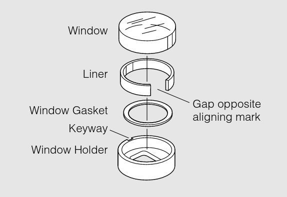
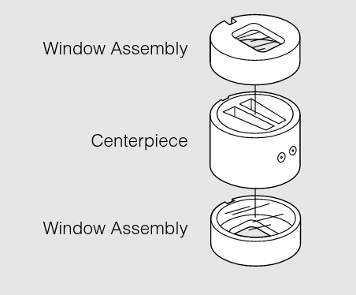
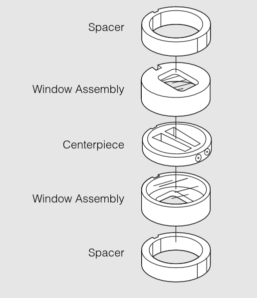
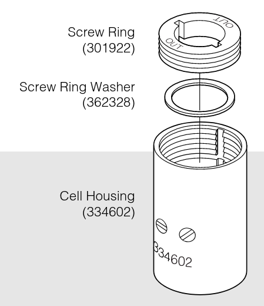
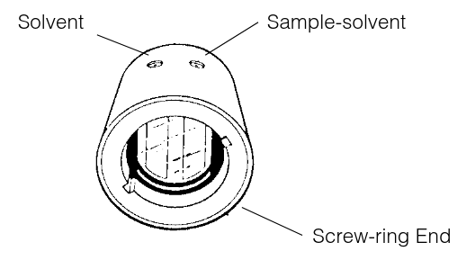
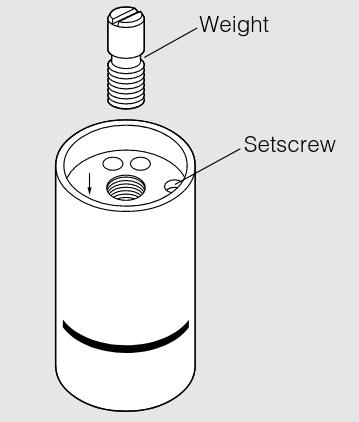
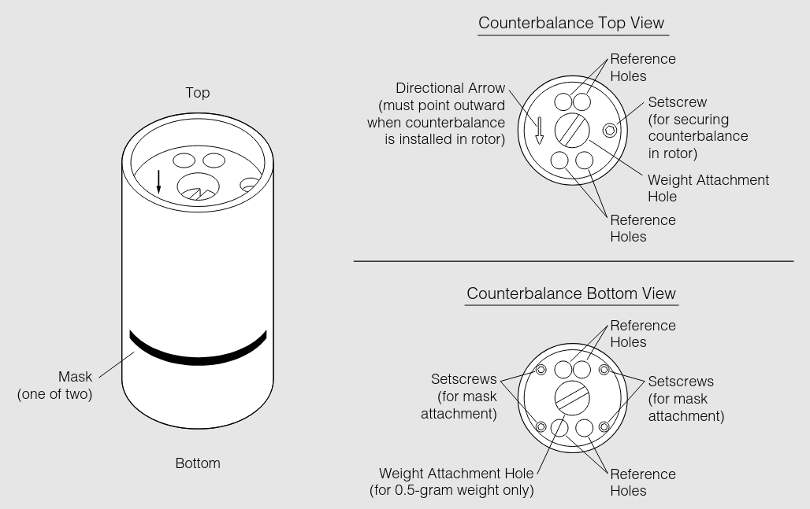

Analytical Cells
AUC Cell Criteria
-
Cells should not leak or distort, even when subjected to high centrifugal forces. These forces can create hydro-static pressures up to 250 bar at the bottom of the solution column.
-
Cells should allow for the passage of light through the cell, via quartz or sapphire windows, while the rotor is spinning.
Components
Each analytical cell that is used in the An-60 Ti and An-50 Ti rotors consist of a centerpiece, two window assemblies, and a cell housing. For cells with a 3-mm centerpiece, two spacers are required. Each component is designed with a special key on the housing, and a key-way on the other parts, which will all fit together to provide accurate alignment.
Centerpieces

The sector-shaped sample compartments that are used are essential in velocity experiments as the sedimenting particles will move along radial lines. If the components had parallel walls, the molecules would collide with the walls as they sediment.
Table: Titanium Centerpiece Distributors
Due to the weight of the centerpieces, cells must be used with a titanium centerpiece. For the 3-mm centerpieces, 2 spaces are required.
Double Sector
The sample solution can be placed in one sector, with the second sector for reference material (this sector is filled slightly more than the sample, so that the reference meniscus does not obscure profiles).
Six-Channel Equilibrium
Six-Channel Equilibrium (External Fill)
Boundary Forming
These cells allow the solvent to be laid over a sample while the cell is spinning at a moderately slow speed. These cells can prepare artificial sharp boundaries for measuring boundary spreading in measurements of diffusion coefficients, and for examining sedimentation velocity of small molecules (where the rate of sedimentation cannot create a sharp boundary to clear the meniscus).
Band Forming
There cells allow for the layering of a small volume of solution on the top of a supporting density gradient.12
Windows
Both quartz and sapphire windows can be used in the analytical cells. The window assembly components are compatible with both window types. Handle the windows with care. Do not scratch them; this immediately decommission them.
Sapphire windows are specifically recommended to use with the interference optical system, as they allow for good fringe patterns at speeds above 30,000 rpm because they produce less light refraction. However, they can block the transmission of light below ~240 nm. The sapphire windows are heavier and harder than the quartz windows, and thus expected to have a longer life. They may have an "x" etched on the side to differentiate them. If not, use their weights to determine their type. Do not mix sapphire and quartz windows.
It is very important for the quartz windows to have an absorbance of less than 0.1 AU in the 190 to 800 nm range. Check the absorbance yearly by: 1) cleaning the window and checking that it is clear and not damaged, and; 2) using a spectrophotometer to check the window absorbance. This is done by running a background wavelength scan fro 190 nm to 800 nm with nothing in the light's path. Now, place the window in the path of the light and scan the same wavelength range.
Table: Window Distributors
Assembly
Before assembling your analytical cells, inspect all components, and replace any if they show signs of damage or wear.
[✓] Screw-Ring Check that the screw-ring threads are clean and free of burs. The screw-ring washers should be clear, and not deformed.
[✓] Window Holders Holders should not be distorted. The window gaskets should be clean, and the window liners should not be frayed at the edges. The window gasket should be checked and changed when it becomes transparent, indicating compression. The window liner is placed so that the open end is opposite of the alignment mark and the window inserted with the arrow lined up with the key-way. The window should fit snugly. If it does not, the liner should be changed.
[✓] Windows Check the windows for any scratches or cracks. If necessary and the scratches/cracks are in areas that do not cover the sector, the windows can be used. Check that the windows are clean. There should not be any fingerprints, smudges, dust, or lint. Once they are clean, handle them with a lint-less tissue, holding them by the edges only.
[✓] Centerpiece The centerpieces should have undamaged faces and septum walls.
[✓] Housing Check that the cell-housing threads are clean, the housing key-way is not nicked, the filling holes are clean, and the housing itself is not deformed.
[✓] Cell Weight When using more than 1 analytical cells, ensure that opposing cells contain the same type of centerpiece and are within 0.5 grams of each other.
Once these inspections and checks are completed, the cell assembly can begin.
STEP 1: Assemble Windows
Insert a window gasket into the window holder. Place the liner in the holder, over the gasket. The gap in the liner should be opposite from the key-way. Think of the direction of force and how the liner cushions the window. Carefully insert the clean window into the holder. Repeat as necessary.

STEP 2: Stack Centerpiece and Window Assemblies
The bottom window assembly is pushed down to the bottom of the housing, window side up, aligning the key-way with they key,the centerpiece inserted part number right side up, and the top window assembly inserted.
Stack the centerpiece and the final window assembly (window down), and push them down.
For 3-mm centerpieces, a space must be inserted before the bottom window assembly. The second spacer is placed above the top window.
Do not force any of the components down into the housing. If they do not slide down easily, check for anything that is hindering their movement.
 
STEP 3: Insert Screw Ring into Housing and Tighten

Place the screw ring gasket and screw ring into the top. The side inscribed "OUT" should be facing up. The screw ring can be manually turned, and then finished using a cell assembly tool.
Remember that the screw has a buttress thread, and forcing the ring to screw in the wrong direction will strip the threads.
Place the analytical cell into the cell torque collet. Torque to 125 pound inches. Do not over-torque, as this may lead to warping of the cell or crushing of the windows. Remove the torque from the collet and remove the cell from the vise only touching the housing.
STEP 4: Fill Centerpieces and Seal
Cells can be loaded using either a pipette or a syringe and tubing. Pipetting involves stacking a round, gel-loading tip into a 1000 \(\mu\)l tip to load the 450 \(\mu\)l of sample.
-
Standard Double-Sector: Each sector can hold 0.46 mL. Hold the cell horizontally with the screw ring end facing you and the filling holes up. The reference sector is on the left; the right sector is for the sample-solvent mixture in Absorbance experiments. You can add a greater volume to the reference sector so that the meniscus is easily recognized.
-
Six-Channel Equilibrium (External Fill):
-
Synthetic Boundary (capillary-type):
-
Band Forming:

Once the samples are loaded, a small gasket must be placed over the hole and a small brass screw is placed overin the hole and tightened. The centrifugal force will push the gaskets into the fill holes to seal them.
Over-tightening of the screw can cause warping to the cell housing and make it difficult to push into the rotor hole.
General advice: air must be allowed to escape the chambers as fluid is pushed into the centerpiece; otherwise, fluid will spill out. Concentrated samples and those containing detergents may be difficult to load. Be continual and slow with your injection.
STEP 5: Weigh Assembled Cells and Prepare Counterbalance

Weigh your assembled cells. Opposing cells should weigh within 0.5 grams of each other.
Match the weight of the cell that will be opposite to the counterbalance to the weight of the counterbalance. You can use weights to match. This is done by screwing the weight into the weight attachment hole at the top of the counterbalance. For a 0.5 gram weight, it can be screwed into the weight attachment hole at the bottom of the counterbalance.
Do not have any weights protruding out of the top or bottom of the counterbalance. They should be flush; protruding weights can get sheared off during centrifugation.
STEP 6: Load Rotor
Place the counterbalance in its cell hole (cell 4 for An-60 Ti, cell 8 for An-50 Ti). The arrow on the counterbalance should be pointing away from the center of rotation. If the counterbalance is loose, use a small Allen wrench to tighten the setscrew.
Install each assembled cell into their respective holes with the screw ring up, and the housing filling holes toward the center of the rotor. Match the scribe line on each cell with the scribe line on the rotor hole. Make sure the cell fits snugly into the cell hole.
Finally, the rotor assembly can be placed on the spindle inside the chamber of the AUC, the proper optics installed, and placing the lid. With the last sliding door closed, the vacuum can be turned on.
Disassembly
Once a run has been complete, the cell disassembly process can begin. If you have a machine capable of cleaning the cells without disassembly, it is not necessary to take them apart.
Otherwise the procedure is such:
STEP 1: Remove Housing Screws and Gaskets.
Unscrew and remove the housing gaskets. Remove the plug gaskets with forceps and discard them. Do not scratch the centerpiece.
STEP 2: Remove Sample from Sectors.
If necessary, cells with external filling holes can be emptied after the removal of the plug screws and gaskets, but before disassembling the entire cell. Generally, stable cells can be removed this way, making AUC a non-destructive analysis method.
STEP 3: Loosen Screw-Ring.
Loosen the screw-ring using the cell torque wrench. Remove the ring and washer.
STEP 4: Remove Components.
Place the cell threaded-end down. Push the components out by pressing them down with your finger, while lifting the housing up.
STEP 5: Clean and Store Components.
Push the windows out of the window holders, and thoroughly wash and dry all components. Clean and dry the centerpieces.
Store all components in a dust-free environment.
Cleaning
Cell windows and centerpieces should be cleaned after every run. If hand-washing, disassemble the cell as described above. Centerpieces and windows can be rinsed with warm water. If you have access to an ultrasonic cleaner, they can be placed on the tray with mild detergent, such as LiquiNox, for 60 minutes. Otherwise, use milli-Q water, detergent, and ethanol to clean the components before allowing them to dry in a standing position on a lens paper/Kim wipe. Rinse the centerpieces thoroughly to remove all detergent. The windows can be gently polished with a lens paper before reassembly into the window holders. The cell housing can be wiped with a Kim Wipe dampened with WD-40. If cell leakage has occurred (see below), make sure to disassembly the entire cell and clean all components in a mild detergent solution. Rinse the cleaned components and dry them thoroughly to prevent corrosion.
Spin Analytical provides a AUC Cell Washer that is a simple, stand alone, fault tolerant device for washing AUC cells without time consuming disassembly and reassembly. For information, click here.
Leakage
Cell leakage is a possible issue that may occur when running an AUC experiment. Massive leaks where the sample leaves the cell will cause a temporary loss in chamber vacuum. This will be reported as a diagnostic message on the display screen of the instrument. This is one indication of cell leakage. Another is from observing incoming data scans; the meniscus will shift/disappear toward the cell bottom as sample leaves.
Filling Hole Leaks
These leaks result from the fill hole gaskets not completely sealing the holes.
Leaks Across the Face of Centerpiece
These leaks are a result of scratches on the centerpiece or windows, or from inadequate tightening of the cell housing/screw ring.
Sector to Sector Leaks
These leaks occur only when the fill levels differ by more than 5 \(\mu\)l. This is indicated by meniscus shifting or disappearing. Keep in mind that similar fill volumes reduces the stress of the wall between the sectors, minimizing damage and leaking.
In the six-channel centerpieces, leaking can occur between channels in the direction of the centrifugal force. This is identified by a change in the position of the meniscus.
If leakage is due to a damaged centerpiece, replace the centerpiece and discard the damaged piece.
Counterbalances

The counterbalance is typically coloured anodized red, and must be positioned in hole 4 for the An-60 Ti rotor, and hole 8 for the An-50 Ti rotor. The counterbalance features set screws, center screw holes for weights, and inner and outer reference holes. Mask sets are inserted into these reference hold, one of which is wider that the other - this set should face the outside of the rotor.
To balance the opposing cell, the counterbalance will come with weights. Ensure that the weight is within 0.5 grams of the opposing cell. Only a 0.5 g weight can be added to the bottom center screw hole. All other weights are added on the top screw hole.
A small setscrew in the top of the counterbalance can be used to secure the counterbalance in the rotor. Align the counterbalance using the tick marks on the rotor and the counterbalance housing and then tighten the screw to hold it in position.
For radial calibrations, the instrument will use the absorbance optics to look at the dark and light areas of the counterbalance. The edges in the mask are at 5.85 cm on the inside and 7.15 cm on the outside. Radial calibration of the interference optics is done manually.